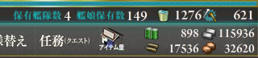

艦これ：E-6 本土南西諸島近海（２）
公開日：

遠征を回しまくって、8000/日のペースで燃料を回復。これぐらいあれば、前回の出撃をもう一回敢行することが可能だ！……そこまでやりたくないケド。
出撃41回目
| 2014/8/19 18:57 | 本土南西諸島近海 | S | 侵攻部隊前衛艦隊 | |
| 2014/8/19 18:58 | 本土南西諸島近海 | C | 侵攻部隊前衛潜水艦隊 | |
| 2014/8/19 19:00 | 本土南西諸島近海 | A | 侵攻空母機動部隊 | 駆逐艦 雷 |
ラストスパートなので、キラ付けもまじめにやってみたが……正規・装甲空母×3 で挑んでみたけど、「瑞鶴」が大破。軽空母を正規空母に替えてみても、1発くらえば同じことか……。
撤退。
出撃42回目
| 2014/8/19 19:08 | 本土南西諸島近海 | S | 侵攻部隊前衛艦隊 | 軽巡洋艦 那珂 |
| 2014/8/19 19:09 | 本土南西諸島近海 | B | 侵攻部隊前衛潜水艦隊 | |
| 2014/8/19 19:11 | 本土南西諸島近海 | A | 侵攻空母機動部隊 | |
| 2014/8/19 19:13 | 本土南西諸島近海 | S | 侵攻部隊主力艦隊 | 正規空母 瑞鶴 |
「北上」「大和」「武蔵」「長門」「千歳」「千代田」で挑む → ボス撃破。やはりこの構成が安定か？
出撃43回目
| 2014/8/19 19:34 | 本土南西諸島近海 | S | 侵攻部隊前衛艦隊 | |
| 2014/8/19 19:35 | 本土南西諸島近海 | C | 侵攻部隊前衛潜水艦隊 | |
| 2014/8/19 19:38 | 本土南西諸島近海 | A | 侵攻空母機動部隊 |
初戦で大破した「千代田」が白猫艦載機に撃沈される → ダメコン発動。
というわけで、撤退。
出撃44回目
| 2014/8/19 19:53 | 本土南西諸島近海 | A | 侵攻部隊前衛艦隊 | |
| 2014/8/19 19:54 | 本土南西諸島近海 | B | 侵攻部隊前衛潜水艦隊 | |
| 2014/8/19 19:57 | 本土南西諸島近海 | A | 侵攻空母機動部隊 | 軽巡洋艦 木曾 |
| 2014/8/19 19:59 | 本土南西諸島近海 | A | 侵攻部隊主力艦隊 | 駆逐艦 雪風 |
ボスに到達。「北上」さんが中破してるけれど、ダメージソースは全員生き残っていながら打ち漏らす。でもこれでゲージは削り切った。
出撃45回目
いきなり、ボス到達！ 姫が二匹に……。
| 2014/8/19 20:16 | 本土南西諸島近海 | S | 侵攻部隊前衛艦隊 | |
| 2014/8/19 20:17 | 本土南西諸島近海 | C | 侵攻部隊前衛潜水艦隊 | |
| 2014/8/19 20:19 | 本土南西諸島近海 | A | 侵攻空母機動部隊 | |
| 2014/8/19 20:21 | 本土南西諸島近海 | C | 侵攻部隊主力艦隊 |
――しかし、昼戦で「大和」が大破。やむなく撤退。
出撃46回目
| 2014/8/19 20:36 | 本土南西諸島近海 | S | 侵攻部隊前衛艦隊 | |
| 2014/8/19 20:38 | 本土南西諸島近海 | B | 侵攻部隊前衛潜水艦隊 | |
| 2014/8/19 20:39 | 本土南西諸島近海 | A | 侵攻空母機動部隊 | 駆逐艦 荒潮 |
| 2014/8/19 20:42 | 本土南西諸島近海 | A | 侵攻部隊主力艦隊 | 軽空母 飛鷹 |
ボス撃破。
――というわけで、E-6 も無事終了……。
ドロップ＆報酬
| S | A | |
| 侵攻部隊前衛艦隊 | 羽黒、霞、五十鈴、荒潮、神通、青葉、足柄、多摩、大潮、那珂、鳳翔、名取、由良、夕立、龍田 | 荒潮 |
| 侵攻部隊前衛潜水艦隊 | - | - |
| 侵攻空母機動部隊 | 筑摩 | 加古、暁、荒潮、子日、神通、多摩、天龍、那珂、白露、鳳翔、木曾、雷、涼風、霰 |
| 侵攻部隊主力艦隊 | 瑞鶴、長門、浜風、夕張 | 長月、まるゆ、高雄、雪風、飛鷹、夕張、翔鶴 |
イベント報酬の駆逐艦「磯風」もゲット！
ひー……疲れた……orz
このあと、何回か「早霜」「清霜」のドロップを狙おうと思って、「侵攻空母機動部隊」で S 勝利することを目的とした部隊を編成してみたのだけど、あまり S 勝利率が高くなかった。偵察がいらなくなるから、空母の火力を増すことができるし、割りと余裕でイケるかと思っていたのだが……。まだ E-5 で掘ってる方がマシかなって感じた。
消費資材
計46回出撃。
- 燃料：43,000
- 弾薬：21,000
- 鋼材：46,000
- ボーキサイト：3,500
バケツ170個。ダメコンは数えてない……全部使いきったので、母港の拡張ついでに女神2つと要員1つを買ってしまった（余ったポイント200＋購入ポイント2,000）。その購入した女神も1つ失ってしまった orz